WIKI
WIKI
Weapon mods & Fabricator
The Fabricator is a workbench that puts a mod on a melee weapon: an electric cable, poison leaves, a lighter, an ice pack or a box of nails. The mod is drawn on the weapon itself and gives its hits a chance to shock, poison, burn, freeze or stun. Some weapon + mod pairs are signature combos with a bonus of their own.
How to use the Fabricator
Hold the Fabricator item and right click a free spot on the ground: the workbench (2 blocks wide) appears facing you, with a welding arm and a projector. Sneak + right click it with a wrench to pack it up again.
Right click the workbench with a melee weapon in your hand: an amber hologram opens above it, one card per mod, plus Reinforce and Remove Mod, with your weapon turning in 3D.
Under the card there are 3 big buttons: < PREV, the action (BUILD or REMOVE) and NEXT >. Look at one (a frame shows which) and right click. Punch also goes back one card.
When the card says READY, press BUILD: the welding arm works for 2 seconds, then the parts are used up and the mod is on your weapon (its name and description change).
A weapon holds one mod: a new one replaces the old one. Removing a mod is free, but the parts are lost.
Right click the workbench with anything else in your hand: the cards are blocks and gadgets made from parts (Glue Puddle, Sprinkler, Electric Fence, Barbed Wire, bombs, flares, shurikens). BUILD puts them in your inventory.
Right click it with shurikens in your hand: Electric, Toxic or Fire for up to 8 shurikens of the stack (1 part + 2 scrap). Every hit shocks 2 s, poisons 5 s or sets on fire 4 s; a shuriken you pick up again keeps its mod.
The last card of every panel is CLOSE. The panel also closes when you walk away (6 blocks) or put the weapon away.
What the panel shows
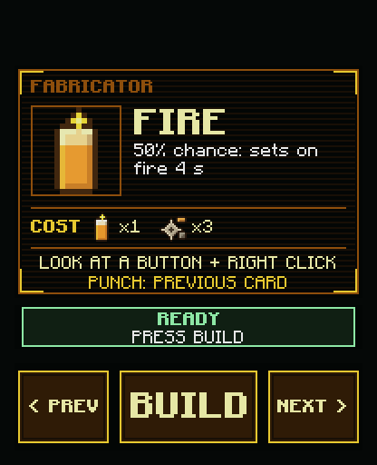
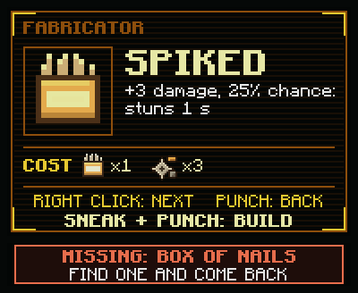
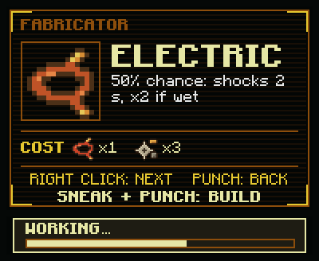
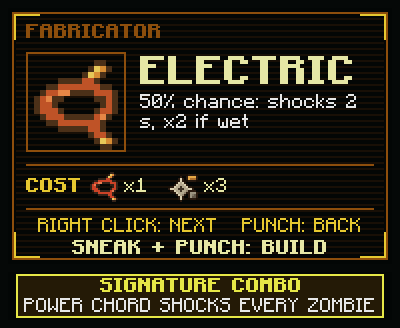
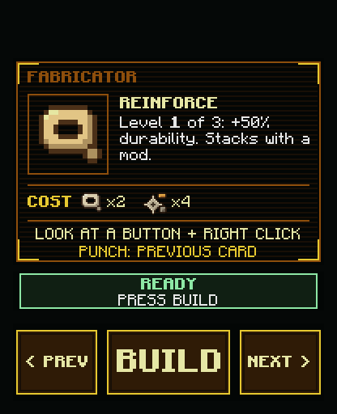
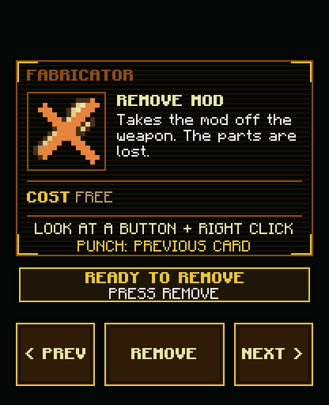
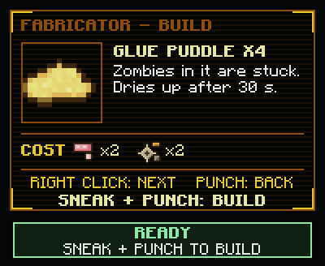
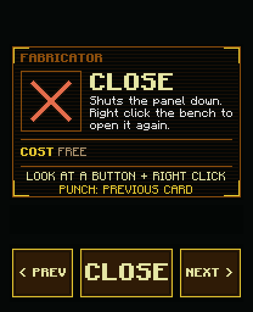
Getting a Fabricator
Traders
 25 scrap Tinkerer · Deployablesin stock 85% of the time
25 scrap Tinkerer · Deployablesin stock 85% of the timeCraft it
Crafting table: 6 Scrap, 2 Duct Tape, 1 Electric Cable.
Signature combos
These weapon + mod pairs get a bonus of their own.
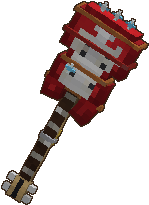
Electric Guitar + ElectricPower chord shocks every zombie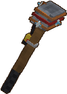
Sledgehammer + ElectricGround slam leaves a shock ring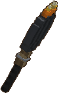
Frying Pan + FireHot pan: always burns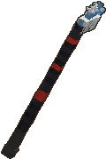
Hockey Stick + FrostShots freeze zombies solid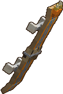
Skateboard + FireFire trail when you ride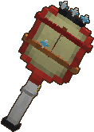
Tennis Racket + ElectricReturned shots shock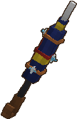
Combat Umbrella + ElectricLightning rod in stormsWeapons that accept a mod
 Baseball Bat
Baseball Bat Golf Club
Golf Club Katana
Katana Frying Pan
Frying Pan Shovel
Shovel Traffic Sign
Traffic Sign Skateboard
Skateboard Electric Guitar
Electric Guitar Combat Umbrella
Combat UmbrellaReinforced weapons
Reinforce makes a weapon last longer: +50% durability per level, 3 levels, no change to its look. It stacks with the mod.
The 5 mods
 Electric mod
Electric mod
Effect: 50% chance: shocks 2 s, x2 if wet.
Cost: 1 Electric Cable + 3 scrap at the Fabricator.
Where to find the Electric Cable
Boss loot
 The Warden
The Warden The Zombot
The ZombotContainers and finds (chance each time)
Dropped by
 The Live Wire
The Live Wire Toxic mod
Toxic mod
Effect: 50% chance: poisons 5 s. 1 damage a second.
Cost: 1 Poison Leaves + 3 scrap at the Fabricator.
Where to find the Poison Leaves
Boss loot
 Mother Bloater
Mother BloaterContainers and finds (chance each time)
Dropped by
 Farmer
Farmer Fire mod
Fire mod
Effect: 50% chance: sets on fire 4 s.
Cost: 1 Lighter + 3 scrap at the Fabricator.
Where to find the Lighter
Traders
3 scrap Tinkerer · Gadgetsin stock 85% of the timeBoss loot
 The Mech Trooper
The Mech TrooperContainers and finds (chance each time)
 Frost mod
Frost mod
Effect: 50% chance: frost, then freezes. 3 frosts freeze.
Cost: 1 Ice Pack + 3 scrap at the Fabricator.
Where to find the Ice Pack
Containers and finds (chance each time)
Dropped by
 Spiked mod
Spiked mod
Effect: +3 damage, 25% chance: stuns 1 s.
Cost: 1 Box of Nails + 3 scrap at the Fabricator.
Where to find the Box of Nails
Boss loot
 The Mutated
The MutatedContainers and finds (chance each time)
Dropped by
 Ladder Zombie
Ladder ZombieBlocks you can build
Right click the workbench without a melee weapon in hand.
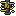
Electric Fence x4Zaps zombies that touch it. Right click: on / off.1 Electric Cable + 4 Scrap Electric Bomb x1Throw it: shocks every zombie around.1 Electric Cable + 2 Scrap
Electric Bomb x1Throw it: shocks every zombie around.1 Electric Cable + 2 Scrap Virus Bomb x1Throw it: a toxic cloud.1 Poison Leaves + 2 Scrap
Virus Bomb x1Throw it: a toxic cloud.1 Poison Leaves + 2 Scrap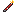
Flare x2Throw it: lures every zombie within 32 blocks.1 Lighter + 2 Scrap Shuriken x4Thrown star, often recovered.3 Scrap
Shuriken x4Thrown star, often recovered.3 Scrap